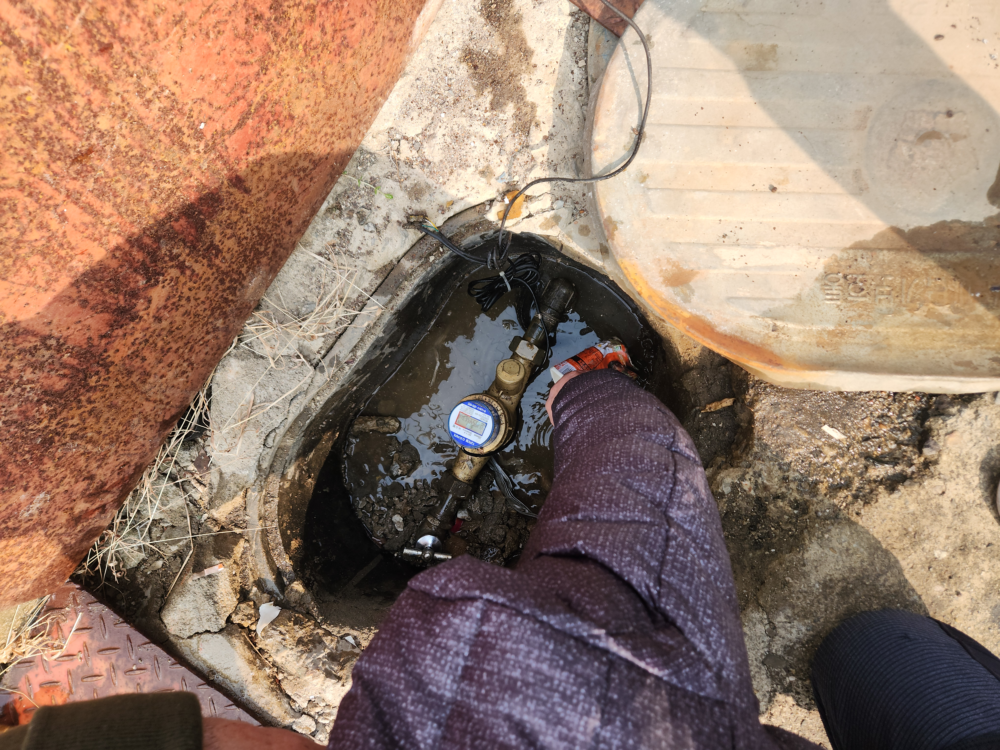
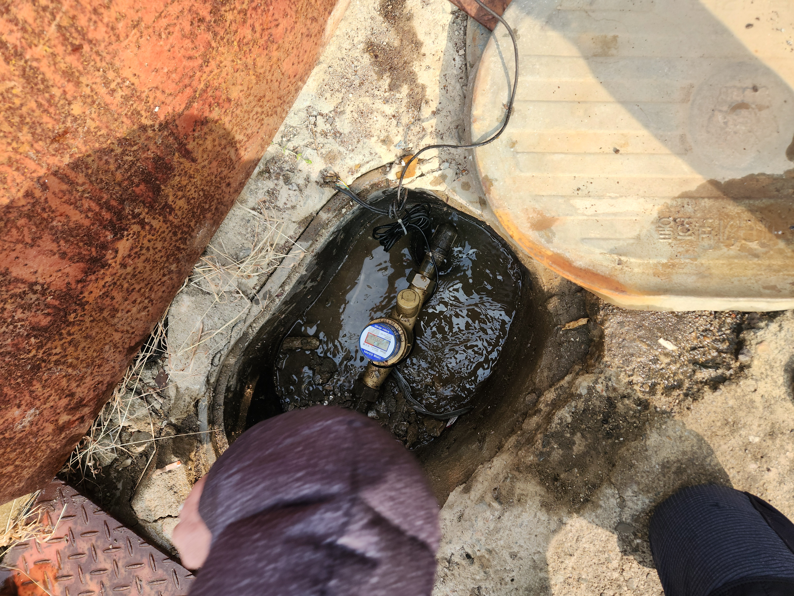
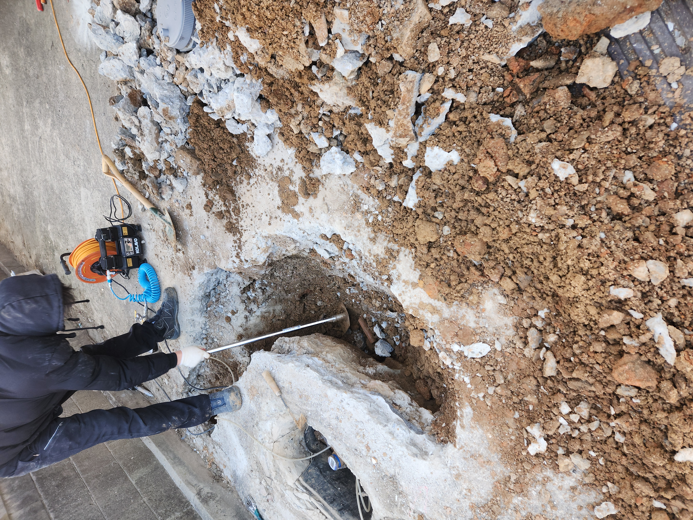

건물 외부 계량기함 주변 바닥이 계속 젖어 있다는 신고를 받고 출동한 현장입니다.
맨홀 덮개를 열어 계량기함 내부를 확인해 보니 물이 가득 고여 있었습니다. 외부누수는 이렇게 계량기함이나 밸브실에 물이 고이는 것으로 1차 확인이 가능한 경우가 많습니다. 계량기 주변 배관을 자세히 살펴보니 이음부 쪽에서 계속 물이 흘러나오고 있었습니다. 외부에 매설된 배관은 계절 변화와 지반 침하의 영향을 오래 받다 보니, 시간이 지나면서 이음부 실링이 약해지거나 관 자체에 미세한 균열이 생기는 경우가 흔합니다.
정확한 누수 지점을 확인한 뒤 해당 구간의 배관을 교체하고 이음부를 새로 시공했습니다. 작업 후 계량기 수치를 일정 시간 확인해 정상적으로 멈춰 있는 것까지 재확인하고 마무리했습니다.
계량기함 주변이 자주 젖어 있거나 수도 요금이 평소보다 많이 나온다면 외부누수를 의심해 보셔야 합니다. 방치하면 지반이 약해지거나 인근 구조물에도 영향을 줄 수 있습니다.
비슷한 증상으로 문의하실 곳을 찾고 계신다면 전화로 접수해 주세요. 접수 건은 확인 후 신속하게 연결해 안내해 드리며, 현장 진단 후 견적에 동의하신 뒤에만 작업이 진행됩니다.